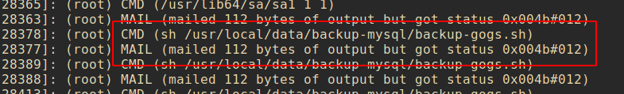
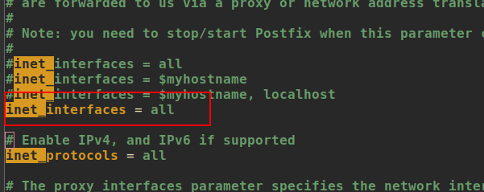

测试环境为CentOS7
一、通过定时任务备份mysql数据库
前提条件：
- 首先在备份机上安装mysql的客户端，或者直接安装mysql也可以。
开始备份
1、 创建备份文件存储路径
1
| mkdir /data/backup/test/
|
2、创建备份脚本
写入shell：
1
2
| # -u用户名 -p密码 这两者中间不能添加空格，存在空格会备份失败
mysqldump -h 需要备份数据库所在机器ip -u用户名 -p密码 备份的数据库名 --opt -Q -R --skip-lock-tables > 备份文件所在路径
|
实例：
1
2
| # 此处的文件保存路径一定要写绝对路径，相对路径会有问题
mysqldump -h 192.168.0.11 -uroot -p123456 test --opt -Q -R --skip-lock-tables > /data/backup/test/test_$(date +%Y%m%d_%H%M%S).sql
|
在创建成功之后可以先运行测试一下看看，相应的路径下面是否有备份的sql文件生成。
3、创建定时任务
3.1安装 crontab
1
2
3
4
5
6
7
8
9
10
11
12
13
14
15
16
17
18
19
20
21
| #查看crontab是否安装
crontab -l
#no crontab for root 未安装
#安装crontab
yum -y install vixie-cron # crontabs的核心依赖
yum install crontabs
#服务状态控制
/sbin/service crond start //启动服务
/sbin/service crond stop //关闭服务
/sbin/service crond restart //重启服务
/sbin/service crond reload //重新载入配置
/sbin/service crond status //查看状态
#或者使用
service crond start
service crond stop
service crond restart
service crond reload
service crond status
#开机启动
vim /etc/rc.d/rc.local
/sbin/service crond start
|
3.2加入计划任务
1
2
| crontab -e
0 1 * * * sh /data/backup.sh
|
查看计划任务是否执行：
1
2
| #命令类似tomcat的日志查看
tail -f /var/log/cron
|
至此，其实定时备份已经完成了，不过还可以有个小优化，在每次执行备份的时候检查一下，多长时间之外的备份文件就不要了，不然备份文件日积月累会越来越多，把磁盘挤爆。。。。
在backup.sh中加入下面语句：
1
| rm -rf $(find /data/backup/ -mtime +30 -name "*.sql")
|
这样就能只备份最近一个月的文件了。
配置参数说明
1
2
3
4
5
6
7
8
9
10
11
12
13
14
15
16
17
18
19
20
21
22
23
24
25
26
27
28
| 基本格式 :
* * * * * command
分 时 日 月 周 命令
第1列表示分钟1～59 每分钟用*或者 */1表示
第2列表示小时1～23（0表示0点）
第3列表示日期1～31
第4列表示月份1～12
第5列标识号星期0～6（0表示星期天）
第6列要运行的命令
crontab文件的一些例子：
30 21 * * * /usr/local/etc/rc.d/lighttpd restart
上面的例子表示每晚的21:30重启apache。
45 4 1,10,22 * * /usr/local/etc/rc.d/lighttpd restart
上面的例子表示每月1、10、22日的4 : 45重启apache。
10 1 * * 6,0 /usr/local/etc/rc.d/lighttpd restart
上面的例子表示每周六、周日的1 : 10重启apache。
0,30 18-23 * * * /usr/local/etc/rc.d/lighttpd restart
上面的例子表示在每天18 : 00至23 : 00之间每隔30分钟重启apache。
0 23 * * 6 /usr/local/etc/rc.d/lighttpd restart
上面的例子表示每星期六的11 : 00 pm重启apache。
* */1 * * * /usr/local/etc/rc.d/lighttpd restart
每一小时重启apache
* 23-7/1 * * * /usr/local/etc/rc.d/lighttpd restart
晚上11点到早上7点之间，每隔一小时重启apache
0 11 4 * mon-wed /usr/local/etc/rc.d/lighttpd restart
每月的4号与每周一到周三的11点重启apache
0 4 1 jan * /usr/local/etc/rc.d/lighttpd restart
一月一号的4点重启apache
|
可能出现的问题

定时任务执行时提示错误0x004b#012
需要修改一个配置
1
| vim /etc/postfix/main.cf
|


Copyright 2021 sunfy.top ALL Rights Reserved